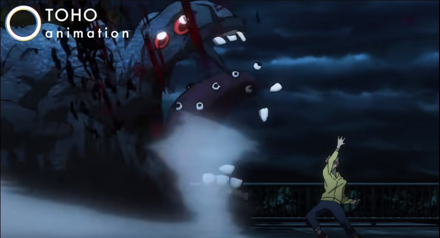
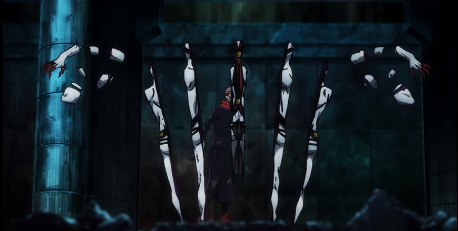
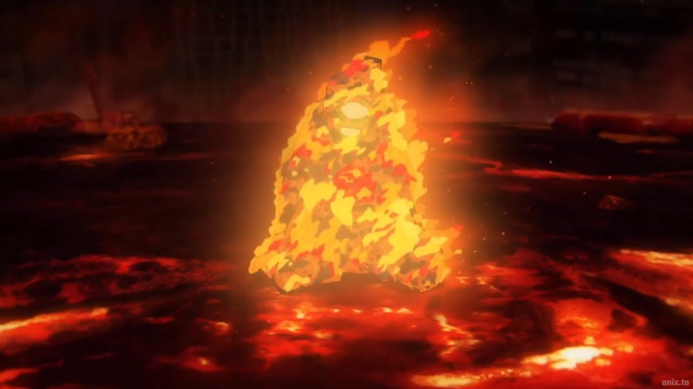
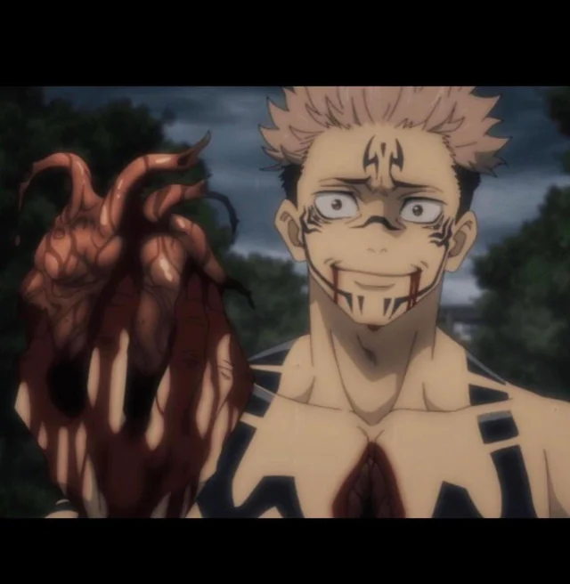
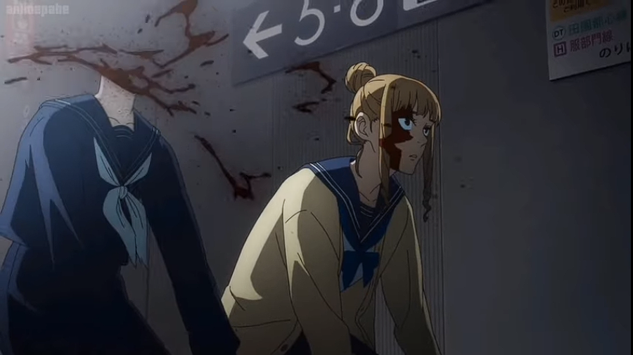
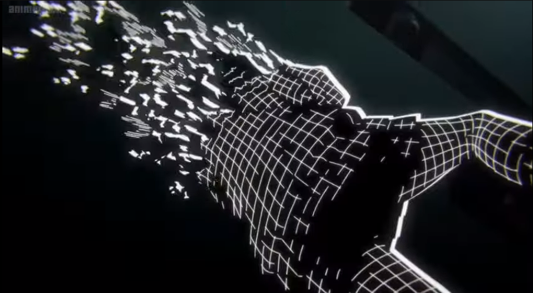
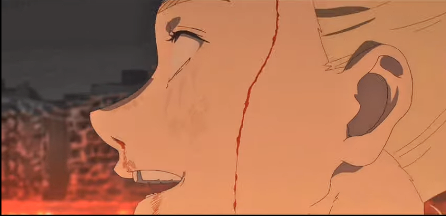
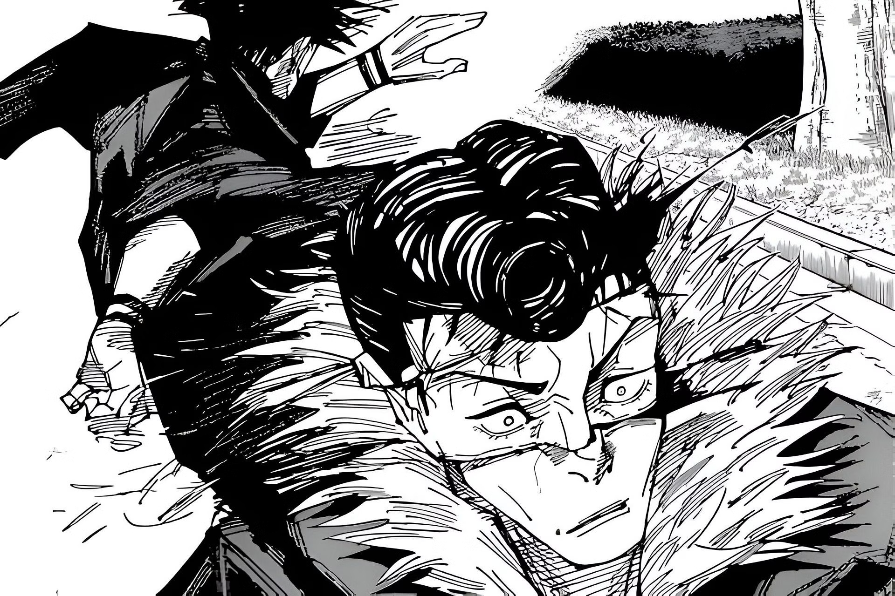

Vitimas feitas por Ryomen Sukuna
| Vitimas | Nomes | Forma da morte | ||
|---|---|---|---|---|
| Maldições | A Primeira maldição a aparecer no anime | Morta com um desmantelar de Sukuna |  | |
| Portador de um dedo de Grau Especial | Presenciou o poder da expanção de dominio de Sukuna |  | ||
| Jogo | Cabonizado por uma flecha de fogo disparada por Sukuna |  | ||
| Pessoas | Yuji Itadori | Yuji Itadori morreu de primeira impressão quando Sukuna arrancou do corpo de seu receptaculo (Itadori) e saiu do controle do corpo fazendo com que Itadori morrese quando ele voltasse, enquanto Itadori estava na sala do necrotério no seu subconciente, ele fez um acordo com Sukuna oque o fez voltar a vida |  | |
| Mimiko Hasaba | Morta por um desmantelar aplicado em sua cabeça por Sukuna |  | ||
| Nanako Hasaba | Com um ataque inical de apenas um desmantelar na cabeça de Nanako, Sukuna parte sua cabeça ao meio na horizontal de esquerda para a direiata (de acordo com a perspectiva mostrada ao audiente) em seguida, tem seu corpo dividido em diversos cubinhos |  | ||
| Haruta Shigemo | Haruto Shigemo foi morto com um corte causado por um desmantelar de Sukuna |  | ||
| Ryu Ishigori | Após Sukuna assumir o corpo de Megumi, Ryu acabou enfrentando-o em batalha e foi desmantelado em poucos instantes. |  | ||
| Total de exatas - 15 Vitimas |
||||